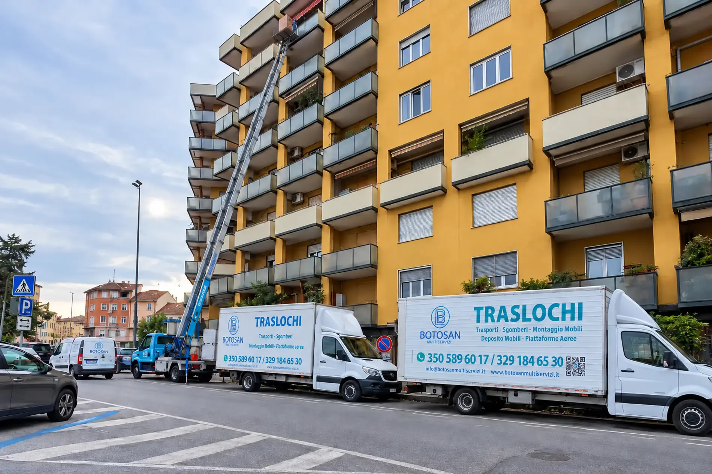
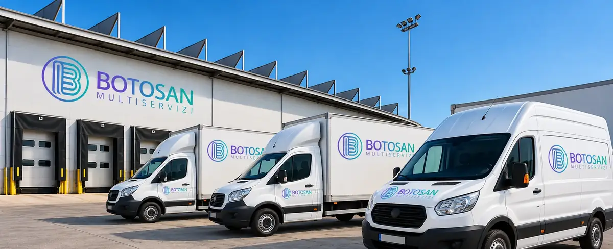

Stefano Benazzi8 mesi fa
Siete stati fantastici. Puliti, precisi e super disponibili e gentili. Grazie per avermi facilitato il trauma del trasloco.




Milano · Monza e Brianza · Lombardia
Dal sopralluogo al rimontaggio dell’ultimo mobile. Un solo referente per trasloco, deposito, sgombero e finiture della casa nuova.
Chi siamo
Seguiamo il cliente dal primo sopralluogo fino all’ultimo mobile rimontato nella casa nuova. Il nostro personale è qualificato nello smontaggio e nel rimontaggio degli arredi, nell’imballaggio degli oggetti fragili e nell’uso delle attrezzature per la movimentazione in quota.
Attorno a un trasloco ruota quasi sempre altro lavoro: liberare una cantina, imbiancare le pareti della casa nuova, montare le porte, tenere i mobili in deposito tra un rogito e l’altro. Invece di mandarti da tre imprese diverse, ce ne occupiamo noi.
Cosa facciamo

Case, uffici e aziende a Milano, provincia e Brianza. Imballaggio, smontaggio, trasporto e rimontaggio.

Fino a 45 metri, sempre con operatore. Quando l’ascensore è piccolo o le scale sono strette.

Custodito in ambienti protetti e controllati, per pochi giorni o per diversi mesi.

Appartamenti, cantine, box e uffici, con smaltimento in discarica autorizzata già compreso.
Anche per un solo mobile o poche scatole, senza organizzare un trasloco completo.

Tinteggiatura, cartongesso, parquet, montaggio porte e pulizie post cantiere.
Come lavoriamo
Gratuito e senza impegno. Valutiamo volume, piani, ascensore, accessi per i mezzi ed eventuale autoscala.
Un solo documento, con smaltimento e permessi già conteggiati. Te lo diamo in giornata.
Ci occupiamo noi delle autorizzazioni per l’occupazione del suolo pubblico, dove servono.
Imballaggio, smontaggio, trasporto e rimontaggio. E se serve pulizie e finiture nella casa nuova.

Dove gli altri si fermano
Armadi, divani, letti ed elettrodomestici escono dalla finestra o dal balcone in sicurezza, con le nostre scale aeree e un operatore sempre a bordo.
Recensioni
Recensioni verificate
5,0 su 192 recensioni Google
Siete stati fantastici. Puliti, precisi e super disponibili e gentili. Grazie per avermi facilitato il trauma del trasloco.
Non posso che condividere un parere più che positivo del servizio fornito. Competenti, precisi ed efficienti sotto ogni aspetto, dal trasloco alla messa in opera in casa. La sig.ra Patrizia mi ha accompagnata in ogni fase, risolvendo ogni mio dubbio o problema con la sua esperienza nel campo. Sono più che soddisfatta e lo consiglio vivamente a chi sta cercando una ditta seria, attenta al cliente e onesta.
Voglio ringraziare tutto lo staff della ditta traslochi Botosan Multiservizi per il lavoro svolto, l’educazione, la professionalità e la rapidità dei ragazzi che hanno svolto materialmente il lavoro. Un grazie di cuore anche alla sig.ra Patrizia che ha gestito la parte amministrativa e con pochissimo preavviso è riuscita a organizzare e gestire il tutto.
Esperienza ottima. Patrizia ti segue con efficacia ed efficienza. Molto scrupolosi, competenti e seri. Consigliatissimo.
Abbiamo scelto Botosan Multiservizi per il nostro trasloco e non potevamo fare scelta migliore! Il team è stato professionale, puntuale e molto attento a ogni dettaglio, rendendo tutto il processo semplice e senza stress. Non si sono occupati solo del trasloco in modo impeccabile, ma ci hanno posato il parquet e sostituito anche tutte le porte, con un risultato davvero soddisfacente.
Pochi giorni fa ho dovuto sgomberare casa e le cantine. Un mio collega mi ha suggerito di rivolgermi a Botosan: è stata una scelta più che buona. In prima battuta ho parlato con la sig.ra Patrizia, la quale con gentilezza ma soprattutto professionalità mi ha aiutato sin da subito a pianificare i lavori. Queste non sono persone che perdono tempo: fanno quello che dicono.
Ottima esperienza con questa ditta: ragazzi puntuali, veloci e attenti. Un ringraziamento speciale a Patrizia, sempre gentile e disponibile. Prezzi più che onesti.
Tutto perfetto, grazie anche a Patrizia che mi ha aiutato a risolvere una situazione di emergenza e con pochissimo preavviso.
Ottimo servizio, veri professionisti! Veloci e preparati. Lo consiglio vivamente!
Ottimo servizio, sempre gentile e paziente, grazie mille!
Dove lavoriamo
Milano città, Inzago, Gessate, Cassano d’Adda, Pessano con Bornago, Settala, Melzo, Segrate, Cernusco sul Naviglio, Sesto San Giovanni e comuni limitrofi.
Monza, Vimercate, Agrate Brianza, Concorezzo, Arcore, Brugherio, Bellusco, Burago di Molgora, Usmate Velate, Villasanta e comuni limitrofi.
Ci spostiamo in tutta Italia: abbiamo portato a termine traslochi verso Torino, La Spezia e Imperia, organizzando il viaggio in modo che il cliente trovi tutto pronto all’arrivo.
Sopralluogo e preventivo gratuiti, senza impegno. Ti rispondiamo in giornata.
Affidati a noi per un trasloco senza stress: smontaggio, imballaggio, trasporto e rimontaggio. Ogni fase seguita da personale nostro, con preventivo chiaro e sopralluogo gratuito.
Scopri di piùSpostiamo uffici e attività nel fine settimana o fuori orario, per non fermare il lavoro: arredi, archivi e postazioni numerati e rimontati nella nuova sede.
Scopri di piùScale fino a 45 metri per caricare da balconi e finestre dove le scale interne non bastano: sicure, veloci e senza danni a mobili o pareti.
Scopri di più